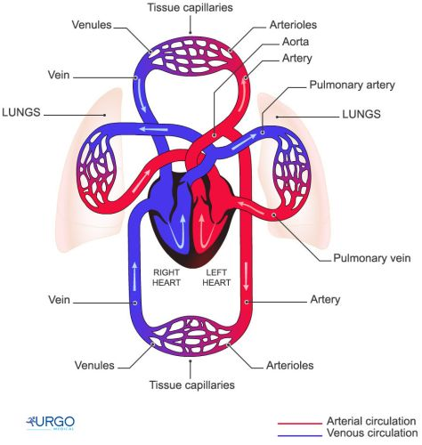

Kretanje krvi kroz krvne sudove, tj. krvotok, odvija se u dva kruga koji funkcionišu istovremeno.
Grčenjem lijeve komore, krv bogata kiseonikom i hranljivim materijama-oksigenisana krv, biva potisnuta u aortu. Iz aorte ova krv arterijama dolazi do kapilarne mreže svih tkiva i organa. Kroz zidove kapilara krv predaje ćelijama kiseonik i hranljive materije, a prima ugljenik (IV)-oksid i druge štetne proizvode metabolizma. Od kada otpusti kiseonik i primi ugljenik (IV)-oksid, krv se naziva dezoksigenisana. Ova krv iz kapilara prelazi u manje vene, koje se spajaju u sve veće. Dvije šuplje vene donose krv iz svih dijelova tijela u desnu pretkomoru srca. Gornja šuplja vena dovodi krv iz gornjih, a donja šuplja vena iz donjih dijelova tijela. Ovaj put krvi od lijeve komore, kroz tijelo, do desne pretkomore naziva se veliki krvotok.
|  |
Dezoksigenisana krv iz desne pretkomore prelazi u desnu komoru. Grčenjem desne komore krv se potiskuje u plućne arterije, a njima do kapilarne mreže u plućima. U plućima se obavi razmjena gasova-krv se "oslobodi" ugljenik (IV)-oksida, a obogati kiseonika. Oksigenisana krv se plućnim venama vraća u lijevu pretkomoru srca. Put krvi od desne komore srca, kroz pluća, do lijeve pretkomore označen je kao plućni ili mali krvotok.